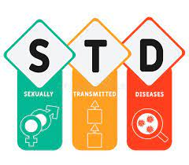

STDs stand for sexually transmitted diseases, which are infections that are primarily transmitted through sexual activity. Some examples of STDs include chlamydia, gonorrhea, syphilis, herpes, HIV/AIDS, and human papillomavirus (HPV). STDs can be spread through any kind of sexual activity, including vaginal, anal, and oral sex. It's important to practice safe sex and get tested regularly if you are sexually active to prevent the spread of STDs and protect your health.

Causes ?
Bacteria: Examples of bacterial STDs include chlamydia, gonorrhea, and syphilis. Viruses: Viral STDs include herpes, human papillomavirus (HPV), hepatitis B, HIV/AIDS, and some strains of hepatitis C. Parasites: Trichomoniasis is an STD caused by a parasite.
Diseases ?
Chlamydia: A bacterial infection that can cause pain during urination, vaginal or penile discharge, and abdominal pain. Syphilis: A bacterial infection that can cause a range of symptoms including genital sores, rash, and fever. HIV/AIDS: A viral infection that attacks the immune system, causing a range of symptoms and increasing the risk of other infections and diseases.
Hepatitis B and C: Viral infections that can cause liver damage and other health problems.
Preventions.
Educate the community: Providing education and awareness about safe sex practices, STD prevention, and the importance of regular testing can help reduce the risk of transmission.
Encourage safe sex practices: Promoting the use of condoms and other forms of contraception can help reduce the risk of STD transmission.
Provide resources: Providing resources such as free condoms and educational materials can help increase access to prevention methods.